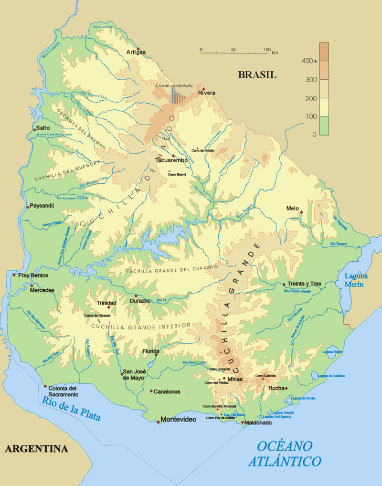

Geography
|  |
With 176,214 km2 (68,037 sq mi) of continental land and 142,199 km2 (54,903 sq mi) of
jurisdictional water and small river islands, Uruguay is the second smallest sovereign nation in
South America
(after Suriname) and the third smallest territory (French Guiana is the smallest). The landscape
features mostly rolling plains and low hill ranges (cuchillas) with a fertile coastal lowland.
Uruguay has 660 km (410 mi) of coastline. |
|
Stretching east from Montevideo along the Río de la Plata are the departments of Canelones,
Maldonado, and Rocha. The inland portion of Canelones is an area of small farms and truck
gardens, which produce vegetables for the capital. It was relatively poor in 1990. Many
inhabitants of the department's small towns also commuted to jobs in Montevideo by express
bus. Along the coast lie a string of small seaside towns (balnearios), from which more
prosperous employees had also begun to commute. Farther east in the highly developed
department of Maldonado lies the major resort of Punta del Este. This has been developed as a
fashionable playground more for Argentines than for average Uruguayans, who found it too
expensive. With its hotels, restaurants, casino, and nightclubs, Punta del Este was a major
export earner, and it dominated Uruguay's tourism industry. |
|
ClimateLocated entirely within the southern temperate zone, Uruguay has a climate that is relatively
mild and fairly uniform nationwide. According to the Köppen Climate Classification, most of
the country has a humid subtropical climate (Cfa). Only in some spots of the Atlantic Coast and
at the summit of the highest hills of the Cuchilla Grande the climate is oceanic (Cfb). The
country experiences the four seasons, with summer being from December to March and winter from
June to September. Seasonal variations are pronounced, but extremes in temperature are rare.
Summers are tempered by winds off the Atlantic, and severe cold in winter is unknown.
Although it never gets too cold, frosts occur every year during the winter months, and
precipitation such as sleet and hail occur almost every winter, but snow is very rare; it does
occur every couple of years at higher elevations, but almost always without accumulation. As
would be expected with its abundance of water, high humidity and fog are common. The absence
of mountains, which act as weather barriers, makes all locations vulnerable to high winds and
rapid changes in weather as fronts or storms sweep across the country. These storms can be
strong; they can bring squalls, hail, and sometimes even tornadoes. The country experiences
extratropical cyclones but no tropical cyclones, due to the fact that the South Atlantic Ocean
is rarely warm enough for their development. Both summer and winter weather may vary from day to
day with the passing of storm fronts, where a hot northerly wind may occasionally be followed by
a cold wind (pampero) from the Argentine Pampas. |
|